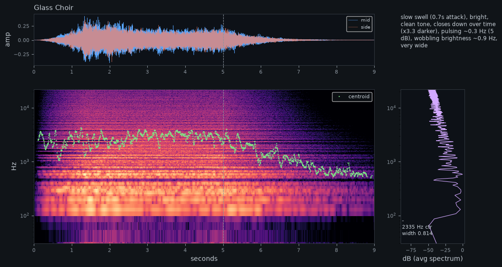

Glass Choir
Evolving detuned pad with a slow filter sweep: a wavetable that drifts from hollow organ to a brighter vowel-like spectrum, filter blooming over several seconds, chorus and a long hall.

What the ears reported
- slow swell (0.7s attack)
- bright
- clean tone
- closes down over time (x3.3 darker)
- pulsing ~0.3 Hz (5 dB)
- wobbling brightness ~0.9 Hz
- very wide
- Pitch
- -
- Centroid
- 2335 Hz
- Attack
- 702 ms
- Width
- 0.814
Full listening report
== Glass Choir == Character: slow swell (0.7s attack), bright, clean tone, closes down over time (x3.3 darker), pulsing ~0.3 Hz (5 dB), wobbling brightness ~0.9 Hz, very wide Level: peak -3.7 dBFS, rms -24.8 dBFS, crest 21.1 dB | Envelope: attack 702 ms (half-level in 338 ms), peak at 1.35s, sustain -7 dB Pitch: no single clear pitch (chord, noise or inharmonic; clarity 0.67); see partials Strongest partials: 131Hz C3-4c (-2dB); 196Hz G3+3c (-2dB); 262Hz C4+5c (-3dB); 293Hz D4-5c (-1dB); 330Hz E4+3c (-5dB); 520Hz C5-10c (-7dB); 586Hz D5-5c (0dB); 658Hz E5-4c (-5dB) Spectrum: centroid 2335 Hz (start 2011 -> end 611), 85% rolloff 1184 Hz, flatness 0.032, harmonicity 0.94 Energy by band: sub 0.0%, bass 18.9%, low-mid 62.5%, mid 16.4%, presence 1.7%, air 0.5% Motion: level pulses at 0.32 Hz (5.1 dB p-p); brightness wobbles at 0.95 Hz (±44%) Stereo: width 0.814 (side/mid), L/R correlation 0.203 Timeline (t: level dB, centroid Hz): 0.0s:-32/1608 0.89s:-20/2082 1.8s:-20/2206 2.69s:-23/2804 3.6s:-24/2875 4.5s:-24/2423 5.4s:-30/1638 6.3s:-41/1124 7.2s:-51/730 8.1s:-61/621
How it was built
Wavetables: osc_1: 3 frame(s) · 30 settings · preset file Glass Choir.vital
- env_2 → filter_1_cutoff +40st
- lfo_1 → osc_1_wave_frame 1.0
- lfo_1 → filter_1_cutoff +6st ±
Patch spec (JSON)
{
"name": "Glass Choir",
"description": "Evolving detuned pad with a slow filter sweep: a wavetable that drifts from hollow organ to a brighter vowel-like spectrum, filter blooming over several seconds, chorus and a long hall.",
"wavetables": {
"osc_1": [
{
"harmonics": [
1,
0,
0.5,
0,
0.3,
0,
0.2,
0,
0.1
]
},
{
"harmonics": [
1,
0.6,
0.2,
0.7,
0.1,
0.5,
0.05,
0.3,
0.02,
0.2
]
},
{
"partials": 48,
"falloff": 0.8
}
]
},
"lfos": {
"lfo_1": {
"shape": "sine"
}
},
"params": {
"osc_1_level": 0.6,
"osc_1_unison_voices": 7,
"osc_1_unison_detune": "18%",
"osc_1_stereo_spread": "100%",
"osc_2_on": "On",
"osc_2_transpose": 12,
"osc_2_level": 0.25,
"osc_2_unison_voices": 3,
"osc_2_unison_detune": "10%",
"filter_1_on": "On",
"filter_1_model": "Analog",
"filter_1_style": "24dB",
"filter_1_cutoff": "350Hz",
"filter_1_resonance": "25%",
"env_1_attack": "1.4s",
"env_1_decay": "2s",
"env_1_sustain": 0.8,
"env_1_release": "3s",
"env_2_attack": "3s",
"env_2_decay": "4s",
"env_2_sustain": 0.5,
"lfo_1_sync": "Seconds",
"lfo_1_frequency": "0.15Hz",
"chorus_on": "On",
"chorus_dry_wet": "35%",
"reverb_on": "On",
"reverb_dry_wet": "40%",
"reverb_decay_time": "5s",
"reverb_size": "80%",
"volume": "-10dB"
},
"mods": [
{
"source": "env_2",
"dest": "filter_1_cutoff",
"amount": "+40st"
},
{
"source": "lfo_1",
"dest": "osc_1_wave_frame",
"amount": 1.0
},
{
"source": "lfo_1",
"dest": "filter_1_cutoff",
"amount": "+6st",
"bipolar": true
}
],
"macros": {
"1": "BLOOM"
},
"play": {
"chord": [
"C3",
"G3",
"D4",
"E4"
],
"dur": 5,
"tail": 4,
"vel": 0.7
}
}